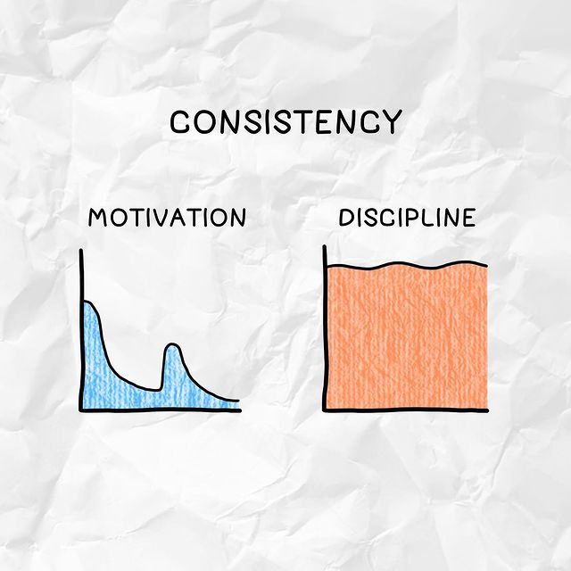

The key to success!
What is success?
Success is that life you always dreamed of living, getting that life is not easy. You have to go through hard times and stick to what matters the most. And then when you finally achieve it you get that tingle of excitement, the proud feeling. Have higher goals and work hard for it. "Nothing worth having comes easy".
The fact that you are reading this article tells that you want to take the improvement pill. That is one of the best decision you can make at any point of your life either you are 60 or a 15 year old kid. I started to work on myself when i was almost 18. When i started this journey i read a quote "Great things in life only happen when you move out of your comfort zone" by someone i do not remember, which is a good point but nothing happens when you start working hard in a factory owned by someone else.But moving out of your comfort zone is the first challenge you may face.Next thing is to start reading books.Now if you are someone like me who hated books in school you will stop reading here.
How books will help you? And what books?
The books you need to read improve yourself are not the books from your school or college, the books that teach you something other than the what schools teach you. Self help books like The 7 Habits Of Highly Effective People by Stephen R. Covey , Atomic Habits by James Clear, The Subtle Art of Not Giving a F*ck by Mark Manson will teach you a lot about life. After selecting a book it is time for you to know how to read it,(Read the blog on how to select a perfect book for you.). I have seen people completing a book in a day or two. But i don't think it is an affective way to read a self help book because while you are reading- you have to start implementing or practicing what the author said. For example in the book Atomic Habits(affiliate link) the author wrote about building a new habit and you have try doing things how he says. And this is the most important thing to do. You get nothing by gaining knowledge on how to cook ,you have to experience it. You have to try it with your hands so that you will know the amount of salt and pepper to add. In my opinion the knowledge gained by experience is better than any knowledge gained by reading. S0 reading one or two chapter a day may take you around 30 minutes each day which is sufficient for a day.

Motivation is fake, chase discipline
People want to achieve something may it be big or small , all of them start with the same motivation. But only some achieve it. You may ask why? It is because motivation depreciates. But if you are disciplined towards your goal and are patient enough until you see result, nobody can take away success from you. If you follow any influencer or a sports star on any social media platform you may feel like "this person has a lot of followers, it is easy for him/her make posts and earn money". But even that person started with 0 followers. It's his disciplined attitude that still keep's him going. For example Virat Kohli, in 2016 he was making centuries for fun and now he is struggling to make a 50. But still he is disciplined towards his goal and the game. Motivation of a person keeps changing once, it may last an hour , a day or a week but it does not live forever. Rely on discipline rather than motivation.
Stay consistent
This is hardest part of reaching a goal you have set for yourself. As many people say you have to fall in the process not the outcome of your goal. For example many kids dream of becoming the CEO of a big company just like Sundar Pichai, Steve Jobs, Satya Nadella or getting a body like a guy in your gym. But no one cares about the hardships they went through to reach that position. So never fall in love with the life after a person achieved success, fall in love with the process. The hustle the person went through is important not the money they are making or the body they have achieved. Here comes the real problem you may love the process but still there will be days where you do not feel like working, you just want to watch tv or skip a workout. This is where you go wrong, you may think skipping one day of workout or study session will not result in a disaster. But it is enough to break you consistency. When you skip workout for a day you don't feel like waking up the next day , the other day and the other day. Here goes all of your consistent effort of x days in vain. Look at the person who already achieved something you want, that person went through the same difficult phase like you did but he showed up on those difficult as well. This is the difference between successful person and a normal person. You can read more about consistency here.
One final thing…
The final thing i would say is to stay patient. Stay patient until you start seeing results and then it won’t be difficult for you to continue your journey. Everyone who start their journey to reach their goals want results as soon as possible but great things take time. When you are working towards your goals and then a day comes when you want just give up , at this point remind yourself “Why” you started this journey. This “Why” is enough to make you consistent and see results.